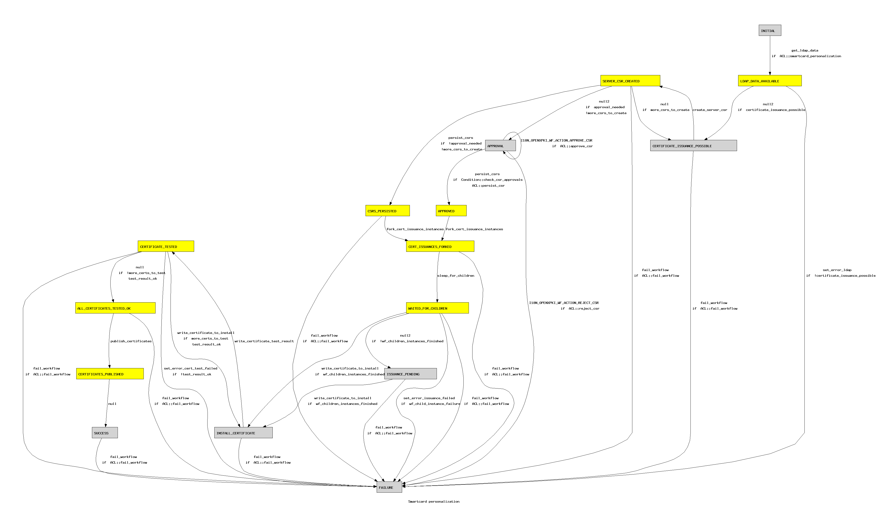

<%attr>
title => 'OpenXPKI workflows graphical representation'
</%attr>

<h1>OpenXPKI workflows' graphical representation</h1>
<p>
<font size=6> Workflow </font><font size=6 color=blue> Smartcard personalization</font><br/>
</p>

<p>
(autorun states are yellow)
</p>


